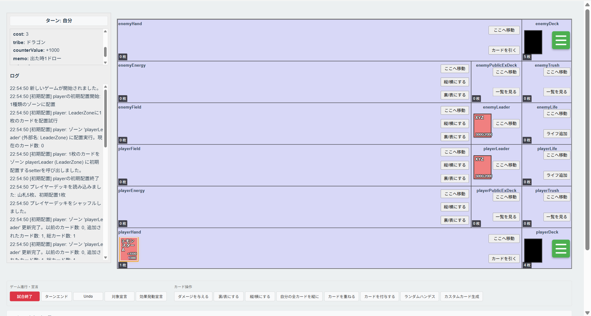

小西 史人
兵庫県立大学大学院 情報科学研究科 データ計算科学専攻
About
大学院で自然言語処理と情報検索を研究しています。研究とは別に、Webアプリケーションを個人で開発・運用しています。
- 甲南大学 知能情報学部 知能情報学科
- 兵庫県立大学大学院 情報科学研究科 データ計算科学専攻
Skills
| 言語 | JavaScript、TypeScript、Python |
|---|---|
| フロントエンド | React |
| バックエンド | Node.js(Express)、MongoDB |
| インフラ | Linux(Ubuntu)、nginx、PM2 |
| 自然言語処理 | PyTorch、Hugging Face Transformers |
Works
Research
-
多言語の語彙ギャップの検出
ある言語に1語で対応する語がない概念を、言語モデルの埋め込み表現から検出する手法を、日本語・中国語・スペイン語で検証。 -
文字単位でのmeaning-frequency lawの検証
日本語・中国語の文字について、出現頻度と意味の多様性の関係を、BERTの文脈埋め込みを用いて分析。